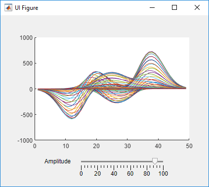
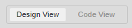
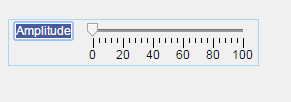
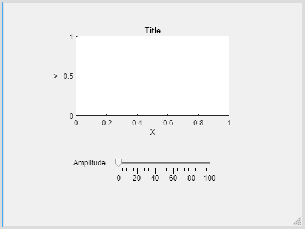
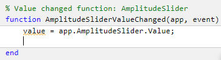

Create and Run a Simple App Using App Designer
App Designer provides a tutorial that guides you through the process of creating a simple app containing a plot and a slider. The slider controls the amplitude of the plotted function. You can create this app by running the tutorial, or you can follow the tutorial steps listed here.

Run the Tutorial
To run the tutorial in App Designer, open the App Designer Start Page and click Show examples in the Apps section. Then, select Interactive Tutorial.
Tutorial Steps for Creating the App
App Designer has two views for creating an app: Design View and Code View. Use Design View to create UI components and interactively lay out your app. Use Code View to program your app behavior. You can switch between the two views using the toggle buttons in the upper right-corner of App Designer.

To create the simple plotting app, open a new app in App Designer and follow these steps.
Step 1: Create an Axes Component
In Design View, create UI components and modify their appearance interactively. The Component Library contains all components, containers, and tools that you can add to your app interactively. Add a component by dragging it from the Component Library onto the app canvas. You can then change the appearance of the component by setting properties in the Component Browser, or by editing certain aspects of the component, such as size and label text, directly on the canvas.
In your plotting app, create an axes component to display plotted data. Drag an Axes component from the Component Library onto the canvas.
Step 2: Create a Slider Component
Drag a Slider component from the Component Library onto the canvas. Place it below the axes component.
Step 3: Update the Slider Label
Replace the slider label text. Double-click the label and replace the word
Slider with Amplitude.

When you have finished laying out your app, the canvas in Design View should look like this:

For more information about laying out apps, see Lay Out Apps in App Designer Design View.
Step 4: Navigate to Code View
Once you have laid out your app, write code to program the behavior of your app. Click the Code View button above the canvas to edit your app code.
When you add components to your app in Design View, App Designer automatically generates code that executes when you run the app. This code configures your app appearance to match what you see on the canvas. This code is not editable and is displayed on a gray background. As part of this generated code, App Designer creates some objects for you to use when programming your app behavior.
The
appobject — This object stores all of the data in your app, such as the UI components and any data you specify using properties. All functions in your app require this object as the first argument. This pattern enables you to have access to your components and properties from within those functions.The component objects — Whenever you add a component in Design View, App Designer stores the component as an object named using the form
app.ComponentName. You can view and modify the names of the components in your app using the Component Browser. To access and update component properties from within your app code, use the patternapp.ComponentName.Property.
Step 5: Add a Slider Callback Function
Program your app behavior using callback functions. A callback function is a function that executes when the app user performs a specific interaction, such as adjusting the value of a slider.
In your plotting app, add a callback function that executes whenever the user
adjusts the slider value. Right-click app.AmplitudeSlider in
the Component Browser. Then select Callbacks > Add ValueChangedFcn callback in the context menu.

When you add a callback to a component, App Designer creates a callback
function and places the cursor in the body of that function. App Designer
automatically passes the app object as the first argument of
the callback function to enable access components and their properties. For
example, in the AmplitudeSliderValueChanged function, App
Designer automatically generates a line of code to access the value of the slider.

For more information about programming app behavior using callback functions, see Callbacks in App Designer.
Step 6: Plot Data
When you call a graphics function in App Designer, specify the target axes or parent object as an argument to the function.
In your plotting app, update the plotted data in the axes whenever the app
user changes the slider value by specifying the name of the axes object in your
app, app.UIAxes, as the first argument to the
plot function. Add this code to the second line of the
AmplitudeSliderValueChanged callback to plot the scaled
output of the peaks function on the
axes.
plot(app.UIAxes,value*peaks)
For more information about displaying graphics in an app, see Display Graphics in App Designer.
Step 7: Update Axes Limits
To access and update component properties from within your app code, use the
pattern
app.ComponentName.Property.
In your plotting app, change the limits of the y-axis by
setting the YLim property of the app.UIAxes object. Add this command to the third line of the
AmplitudeSliderValueChanged
callback:
app.UIAxes.YLim = [-1000 1000];
Step 8: Run the App
Click Run to save and run the app. Adjust the value of the slider to plot some data in the app.
After saving your changes, your app is available for running again in App
Designer or by typing its name (without the .mlapp extension)
in the MATLAB® Command Window. When you run the app from the command prompt, the
file must be in the current folder or on the MATLAB path.